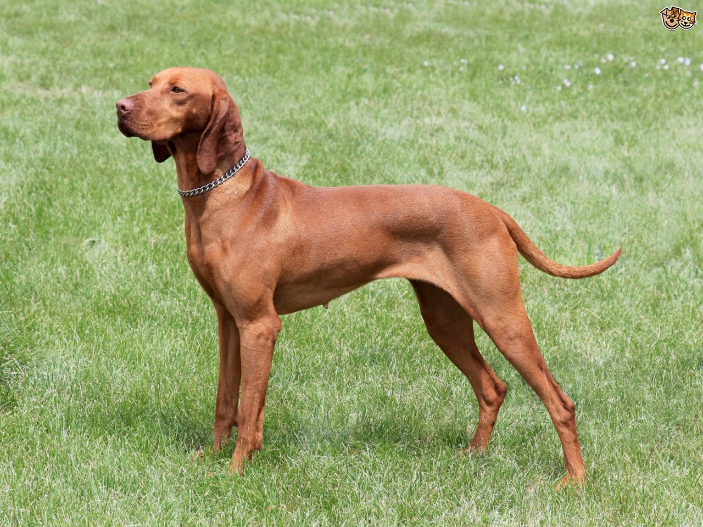

Viszla
Weight
Coat
Color
18-29 kgs
Short, smooth coat that lies close to the body
various shades of solid golden rust
The Vizsla is a dog breed from Hungary and belongs to the FCI group 7 (Pointer group). The Hungarian or Magyar Vizsla are sporting dogs and loyal companions. The Vizsla's medium size is one of the breed's most appealing characteristics. As a hunter of fowl and upland game, the Vizsla has held a prominent position among sporting dogs – that of household companion and family dog.